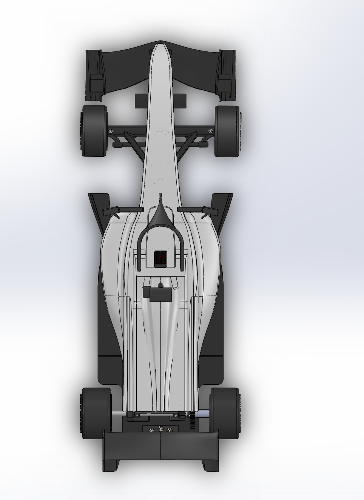
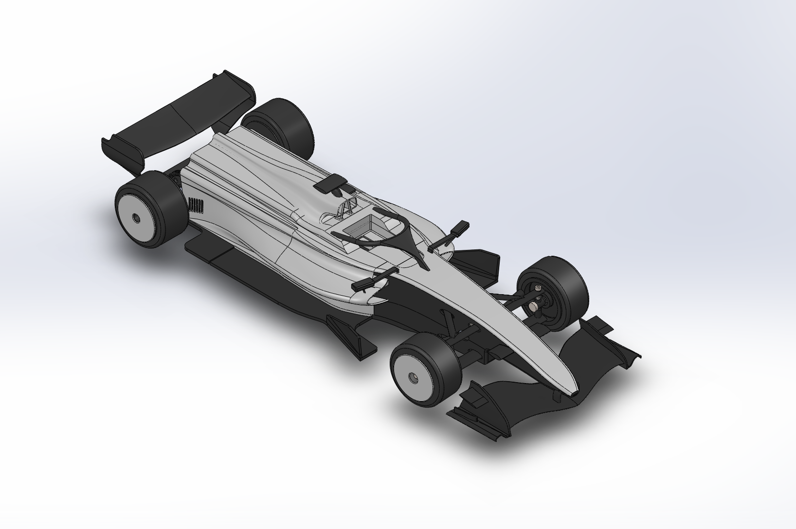
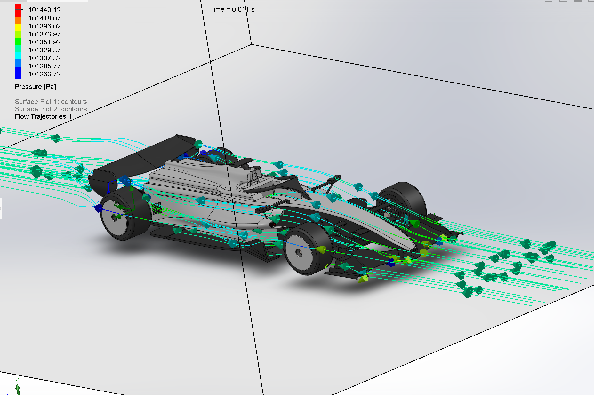
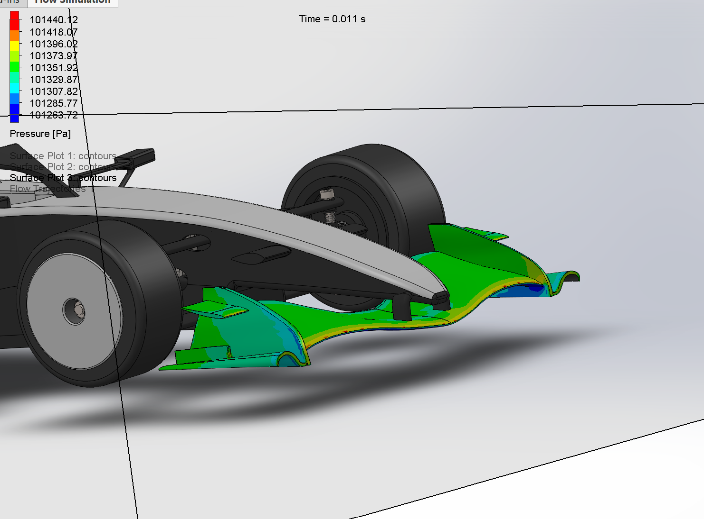
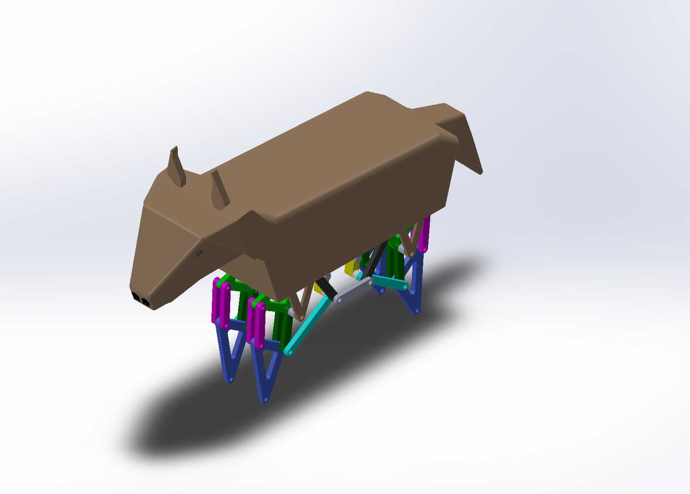

LAWTON PHAN
Mechanical Engineering Student | Texas A&M University
Email: lawtonphan@gmail.com | Phone: (469) 345-0217 | LinkedIn: linkedin.com/in/lawtonphan
Formula 1 RC Vehicle
SolidWorks CAD
CFD Flow Simulation
3D Printing
Kinematics & Aerodynamics
- Designed a custom 1:10 scale RC chassis, suspension system, and aerodynamic bodywork in SolidWorks.
- Performed computational fluid dynamics (CFD) simulations to analyze pressure contours, calculate drag and downforce coefficients, and evaluate downforce distribution between front and rear wing profiles.
- 3D printed structural, steering, and suspension components; optimized print orientation, layer height, and infill density for lightweight mechanical strength.
- Integrated motor electronics and steering servos into custom designed mounts; conducted real world testing to evaluate drivetrain efficiency, front-suspension kinematics, and dynamic ground clearance.






Jansen Linkage Horse Model
SolidWorks Assembly
Mechanism Kinematics
Rapid Prototyping
- Designed and modeled a 12-bar Jansen walking linkage mechanism in SolidWorks, utilizing dynamic assembly mates and motion studies to simulate mechanical walking motion.
- Analyzed planar pin-joint mobility, linkage dimensional ratios, and pivot offsets to prevent mechanical binding during full crank rotation.
- 3D printed, assembled, and physically validated linkage tolerances using press-fit pins to verify mechanism kinematics against the CAD motion simulation.


Hydraulic Arm Prototype
Fluid Actuation
Physical Prototyping
Mechanical Advantage
- Fabricated a multi-axis surgical robot arm prototype based on custom SolidWorks drawings.
- Designed and configured a fluid-filled syringe system for joint rotation, actuation, and clamping.
- Calculated required hydraulic force outputs and lever arm mechanical advantage to ensure smooth joint movement without system leakage or compliance.